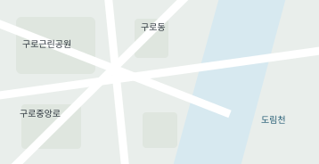

지기
내 정보 입력
재난 시 내 상황에 맞는 안내를 위한 사전 정보입니다.
기본 정보
연령대
이동과 의사소통
이동 능력
계단 이용 가능 여부
선호 안내
시각 지원 필요 여부
청각 지원 필요 여부
함께 대피할 보호 대상
추가 정보
민감정보예요. 필요한 경우에만 직접 입력해 주세요.
재난 시 내 상황에 맞는 안내를 위한 사전 정보입니다.
민감정보예요. 필요한 경우에만 직접 입력해 주세요.

야외에서 불씨를 방치하지 마세요.
운전 시 감속하고 안전거리를 유지하세요.
생수와 손전등을 챙겨두세요.
평소 사용하는 보조기구의 상태를 확인하고, 전동 기기라면 충전해두세요.
10.31 08:20 · 도로 일부 침수
10.25 14:30 · 화재 진화 완료
09.18 11:10 · 안전 조치 완료
지하 공간이나 물이 차오른 도로로 이동하지 마세요.
안전하게 이동하기 어렵다면 침수되지 않은 안전한 위치에서 구조를 요청하세요.
현재 위치와 이동이 어려운 상황을 함께 전달하세요.
지도와 모델이 들어갈 영역이에요.
실제 건물과 경로는 아직 표시하지 않아요.
대피 경로 확인을 위한 기본 구조예요.
현재는 경로 안내를 제공하지 않아요.
민감정보예요. 안내에 필요한 내용만 선택적으로 입력해요.
재난문자와 지역의 대피 안내를 확인하고, 주변 사람에게 상황을 알려요.
안내된 안전한 경로를 확인해요. 물이 찬 길을 건너거나 무리하게 이동하지 않아요.
안전한 위치에서 119에 현재 위치와 상황을 알리고, 구조 안내를 따라요.
· 지하차도 · 지하 공간 · 하천 주변 접근
· 물이 흐르는 도로를 걷거나 운전하기
· 젖은 전기설비나 전선 만지기